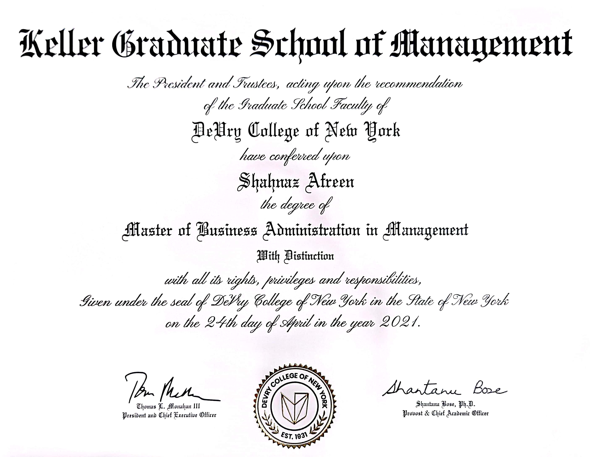
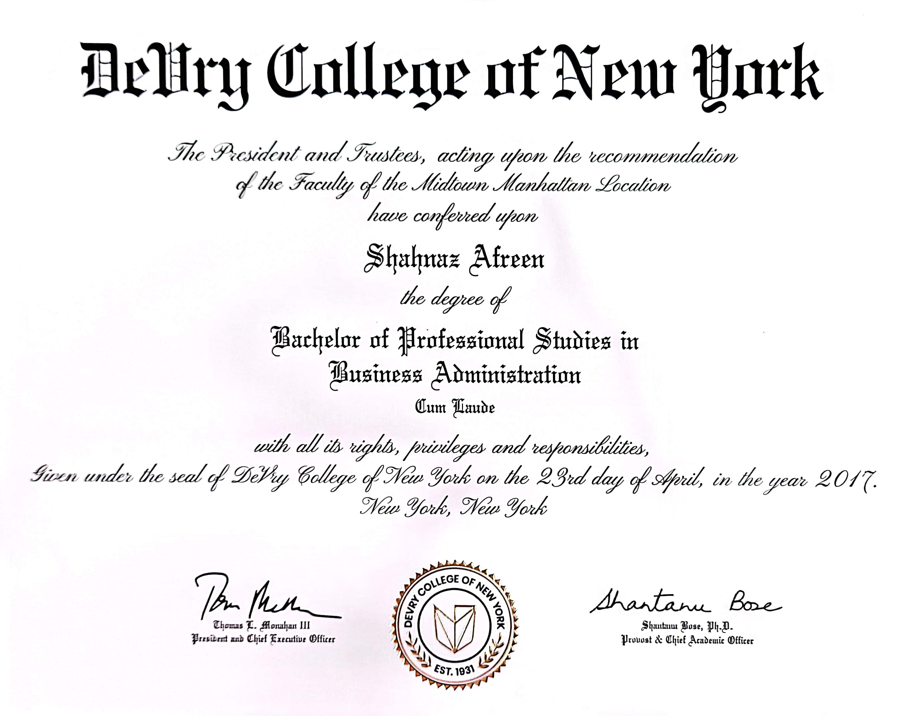

First Group Project
About Me
My name is Shahnaz Afreen, and I am thrilled to have the opportunity to introduce myself as a skilled professional in the field of technology and marketing. As a full-stack developer and digital marketer, I possess a diverse skill set that allows me to contribute to a wide range of projects and initiatives.
With regards to my educational background, I hold an MBA in Marketing and Health Services, as well as a Bachelor's degree in Technical Management. This unique combination of qualifications equips me with a comprehensive understanding of both the business and technical aspects of the industry, enabling me to approach projects from a holistic perspective.
In terms of my technical expertise, I excel as a full-stack developer. I have a strong command over various programming languages, including but not limited to HTML, CSS, JavaScript, and Python. I am proficient in developing responsive and user-friendly websites, as well as creating efficient and scalable backend solutions. My experience spans both frontend and backend development, allowing me to create seamless and integrated web applications.
Additionally, my knowledge and experience in digital marketing complement my technical skills. I have successfully developed and executed digital marketing strategies, including search engine optimization (SEO), social media marketing, and pay-per-click (PPC) campaigns. I am adept at analyzing data, identifying target audiences, and optimizing marketing campaigns to drive results and achieve business objectives.
Throughout my career, I have been recognized for my ability to effectively collaborate with cross-functional teams, communicate complex ideas in a clear and concise manner, and adapt to dynamic and fast-paced environments. I am a proactive problem-solver, always striving to stay up-to-date with the latest industry trends and technologies.
In conclusion, as a full-stack developer and digital marketer with an MBA in Marketing and Health Services, I bring a unique blend of technical expertise and business acumen to the table. I am excited about the possibility of contributing my skills and knowledge to your organization and am confident that my qualifications make me a strong candidate for any challenging projects or roles that may arise.
Portfolio
Qualification:
- MBA from Keller Graduate School of Management 2021 
- BA from Devry College of New York 2017 